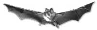

Batmail 200 mailinglist

Word lid van de enige echte Vleermuis-mailinglist! Stuur je een berichtje naar onze batmail200, dan komt het bij iedereen terecht die ingetekend heeft.Je kan op deze pagina direct intekenen, maar mensen met een Yahoo-account kunnen het ook via de homepage van de batmail proberen op http://groups.yahoo.com/group/batmail200/
- Vul je e-mailadres in in het kadertje onderaan en klik op 'OK'
De batmail liep via Yahoo Groups, dat in 2020 is stopgezet. Inschrijven kan niet meer.
- Beantwoord de mail die je binnen twee minuutjes in je mailbox ontvangt door op 'Reply' of 'Beantwoorden' in je mailprogramma te klikken.
- Om het correct gebruik van deze mailinglist te stimuleren en misbruiken of onwetendheid tegen te gaan, hebben we een aantal tips verzameld. Lees ze aandachtig terwijl je op de bevestigings-mail wacht!